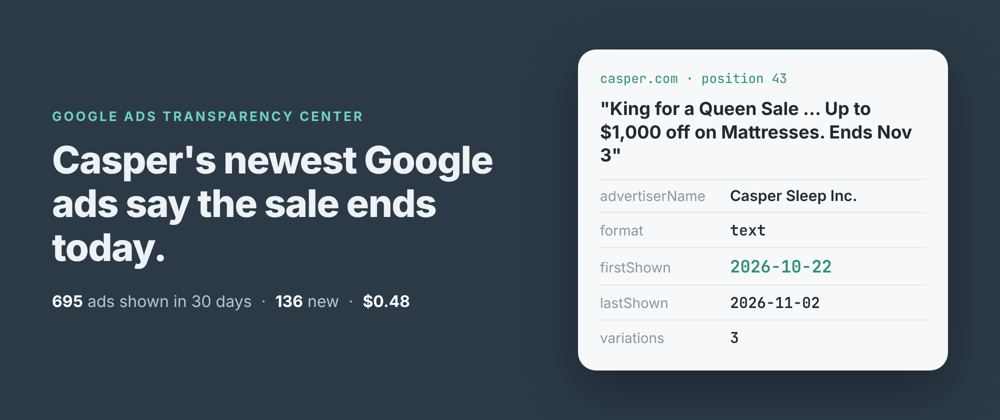
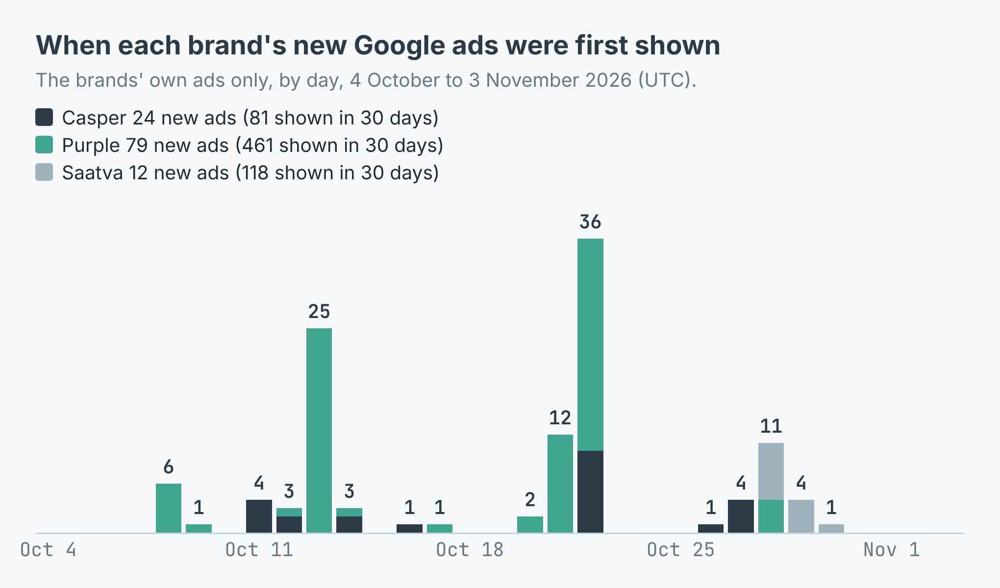
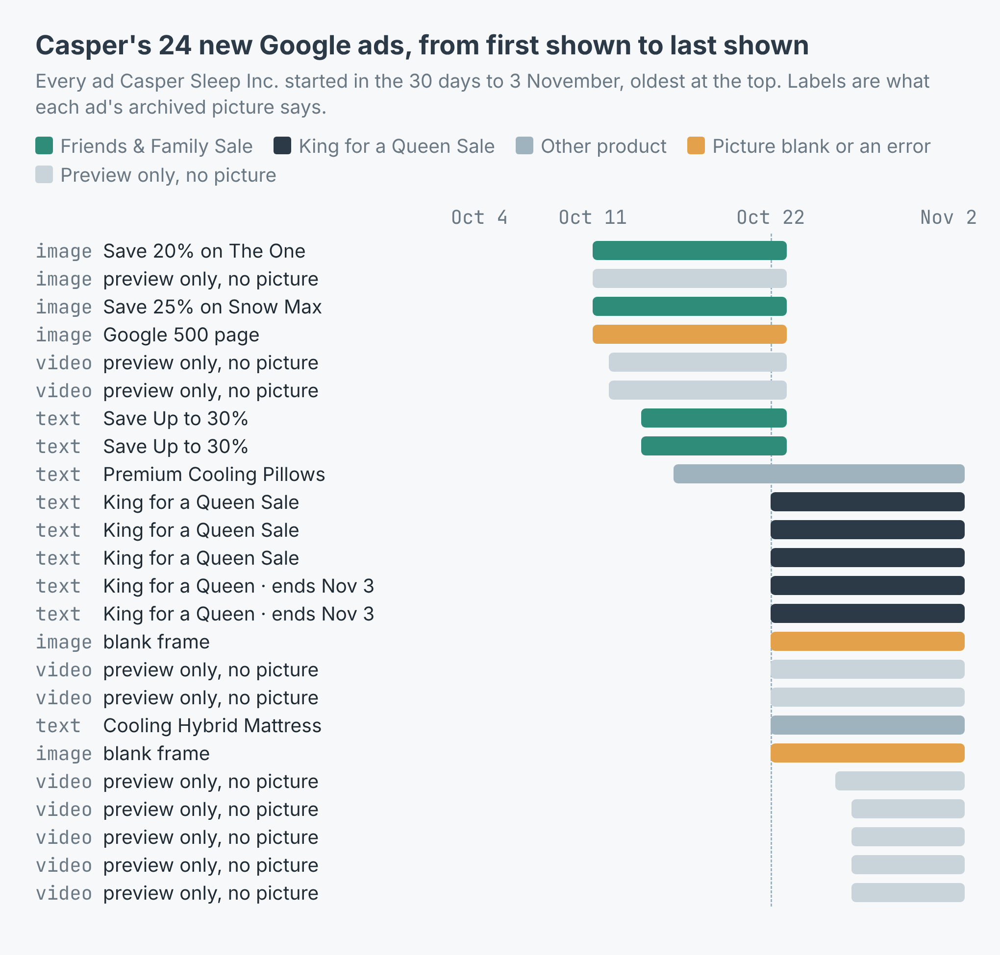
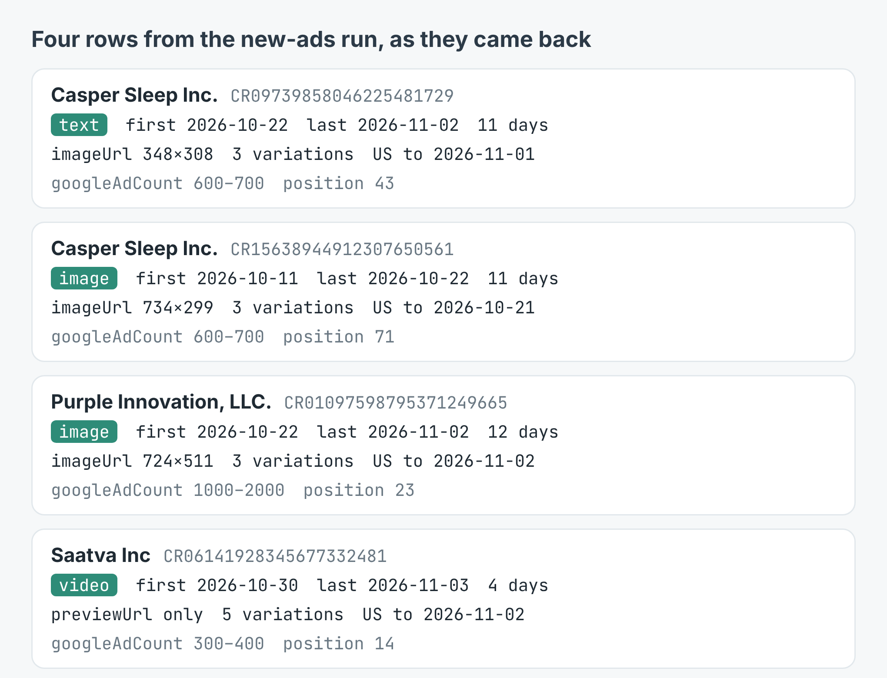

How to see every Google ad a competitor started this month (136 new ads from three mattress brands)
I wrote this with an AI assistant. The runs, numbers and code are real, and I checked them.

"Casper® King for a Queen Sale. Up to $1,000 off on Mattresses. Ends Nov 3."
That's one of Casper's Google search ads, as Google archived it. I read it on 3 November. Google first showed it on 22 October, the same day Casper started nine other new ads and the same day its Friends & Family sale ads stopped running.
You can't see that from a search box. Google shows you the ads it picked for you, today. Its Ads Transparency Center keeps the rest: every ad an advertiser runs, with the day it was first shown and the day it was last shown. Those two dates are enough to rebuild a competitor's month.
What I asked for
I build and run a scraper for the Ads Transparency Center on Apify. You give it a website, an advertiser ID or a name, and it returns one row per ad: format, first and last shown, days shown, a picture of the ad or a link to Google's preview, and Google's own count of how many ads it holds.
I picked three mattress brands that sell online, casper.com, purple.com and saatva.com, and ran them twice. The first run asked for every ad shown in the last 30 days (shownSince: "30 days"). The second asked only for ads first shown in the last 30 days (firstShownSince), with includeAdDetails on for the countries each one ran in. Here's the second, in Node:
import { ApifyClient } from 'apify-client';
const client = new ApifyClient({ token: process.env.APIFY_TOKEN });
const run = await client.actor('simple.actor/google-ads-transparency')
.call({ targets: ['casper.com', 'purple.com', 'saatva.com'],
firstShownSince: '30 days', maxAds: 2000 });
const { items } = await client.dataset(run.defaultDatasetId)
.listItems();
for (const ad of items) {
if (ad.type !== 'ad') continue; // error rows carry no ad
console.log(ad.target, ad.firstShown.slice(0, 10), ad.format);
}
The first run returned 695 ads in 14.5 seconds. The second returned 136 in 113 seconds, slower because it makes one extra request per ad for the details. No error rows in either.
Purple shows the most, Saatva launched last
Purple Innovation showed 461 of its own ads in the 30 days. Saatva showed 118, Casper 81. Google's own counts for each website, every ad it holds, were 1,000 to 2,000 for Purple, 300 to 400 for Saatva and 600 to 700 for Casper.
The new ads came in waves, not a trickle. Purple started 79: 25 of them on 13 October and 26 on 22 October. Casper started 24, ten of them on 22 October. Saatva started 12, and every one of them in the last week, between 28 and 30 October.

New ads by the day Google first showed them. The three brands' own ads only.The formats split differently too. 47 of Purple's 79 new ads were video and 2 were text. Casper's 24 were 9 video, 9 text and 6 image. Saatva's 12 were 7 video and 5 image.
Saatva keeps old ads running longest. The median ad in its 30-day list had been shown for 363 days, and the oldest was first shown on 6 November 2021 and was still running on 2 November 2026. Casper's median was 31 days.
Casper's month, ad by ad
Casper is the one I could read best, because 14 of its 24 new ads have a picture. Google keeps most text ads as a picture of the ad, so I opened each one.
The story is in the dates. Eight ads started between 11 and 14 October and all eight were last shown on 22 October. Every one of them I could read was a Friends & Family Sale ad: "Save 20% on The One", "Save 25% on Snow Max", "Save Up to 30%". On 22 October ten new ads started. Five of the pictures say "King for a Queen Sale", and two of those add "Up to $1,000 off on Mattresses. Ends Nov 3".

Each bar runs from the day Google first showed the ad to the day it last showed it. The labels are what each ad's picture says.That's a sale handover you'd otherwise only catch by searching every day. Run the same lookup weekly and you get it for free: deduplicate on adId, which stays the same between runs, and anything new is a new ad.
Not every ad on a brand's website is the brand's. On the 30-day run, 17 of the 98 ads filed under casper.com came from 17 other advertisers, 7 of Purple's from 6 others, and 11 of Saatva's from 9. The website lookup finds every advertiser whose ads point at the site, so if you watch your own domain, that's the list to check.
Every new ad ran in the US. One of Saatva's also ran in Mexico. The median new ad had 3 variations.

Four rows as they came back from the new-ads run.What it cost
The listing charges $0.0005 for each ad returned and another $0.0005 per ad for the details. Nothing else, no start fee. The 30-day run was 695 × $0.0005 = $0.3475. The new-ads run was 136 × $0.0005 + 136 × $0.0005 = $0.136. Together, $0.48. A website that can't be looked up is never charged.
firstShownSince is the cheap way to get new ads. Only the ads it keeps are charged, but it still has to look down the list: one of Purple's new ads sat at position 456. So set maxAds high. It's how far down the scraper looks, not how many you pay for.
You get the ad, not always its words
Most rows aren't text. Of the 115 new ads the three brands ran themselves, 31 had a picture and 84 had only previewUrl, a link to Google's script that draws the ad in a browser. Video ads are all like that. So the scraper gives you the date, the format and a link for every ad, but reading the headline means opening a picture or a preview.
Some pictures aren't the ad. I opened all 31. 8 were a blank frame, a frame cut off mid-sentence, or Google's own "500. That's an error" page, archived as if it were the ad. The one Saatva ad with a picture was that error page, so none of Saatva's 12 new ads could be read from a picture.
The dates are Google's, in UTC. "Last shown" on an ad that's still running is the last day Google had recorded when I ran it, here mostly 2 November. And an ad count is not a budget. Purple running nearly six times as many ads as Casper says nothing about who spends more.
Make it your competitor
The example repo, competitor-google-ads-scraper, takes a website and a number of days, prints the new ads by format and by the day they started, and writes them to ads.csv, in Node and in Python. Swap in the site you're up against (a rival gym, a local estate agent, a software tool in your niche), set the days to 7 and run it every Monday. Add region: "GB" or another country code to the input to see only what ran there. The scraper is at apify.com/simple.actor/google-ads-transparency.